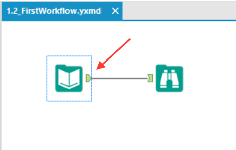

.png)
The Alteryx Designer interface (other than the top menu) has four key components; the tool pallet, the workflow configuration window, the results window and of course the main workspace.
The Tool Pallet is where things start to get interesting. This contains all the drag and drop tools that can be used to construct a workflow. Alteryx contains around 200 tools and are grouped together in different tabs based on functionality (importing data, reporting etc).

The Workspace is where you will drop and connect different tools to build your workflows as we did in our first workflow. All workflows are built in the same way, by dragging, dropping and connecting different tools into the workspace to process your data.

The Configuration Window allows us to tell specific tools or indeed the workflow itself how to behave and process our data. Selecting any tools in a workflow will display the configuration window for that tool and will allow you to adjust associated parameters. In this case we have the input tool selected from our first workflow and displayed are different parameters that can be adjusted for our csv import such as how the file is delimited.

Finally the Results Window enables us to preview both the data output from any tool at any point in the workflow along with associated metadata. Here we can also monitor any errors or warnings that may have occurred during the workflow run. Having selected the browse tool from our first workflow we can see all the data that has been imported into Alteryx from our csv file. Data in this window can also be copied and then pasted into other applications.

Tip: Selecting any of the output nodes of a tool (shown below) will display the first megabyte of data output from the tool in the results window.
One way to think of a workflow is that it’s like a car production line in a factory where the skeleton of a car passes on a conveyor through the factory, stopping at different stations to have panels and doors added, the engine mounted, the exterior painted etc. Alteryx workflows are similar to this but instead of a car we have data. The raw data that you import passes through the workflow (usually from left to right) along the connectors (conveyor), stopping at different tools (stations) to have some operation performed on it before moving on to other tools or outputs.